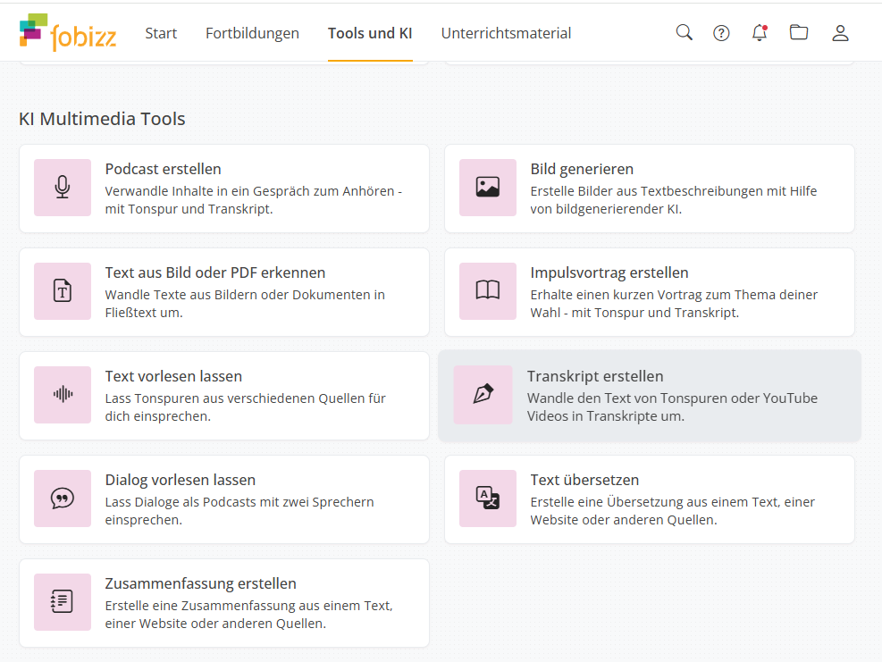
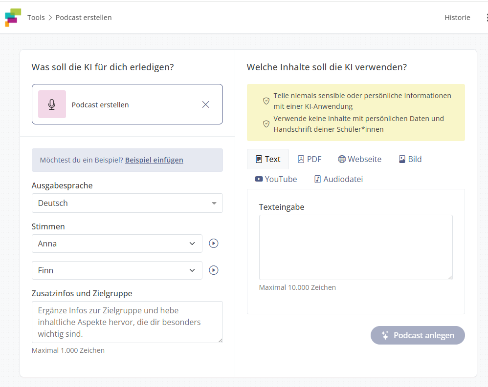
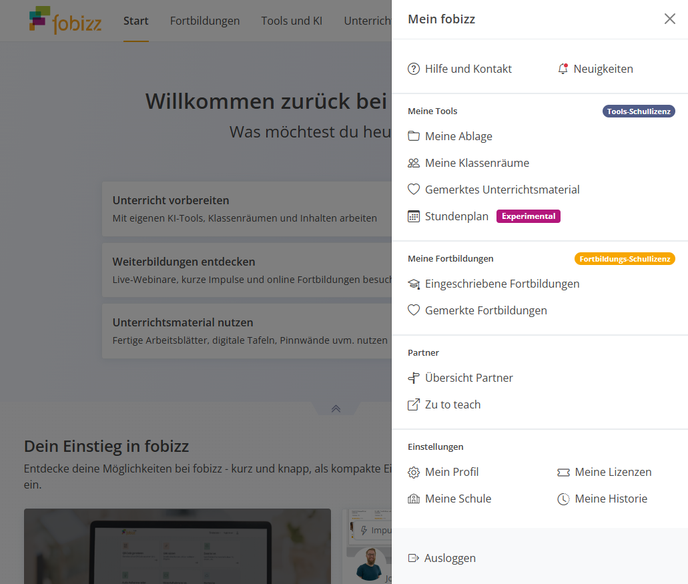
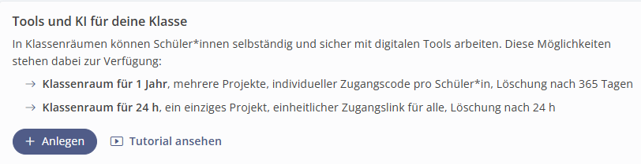
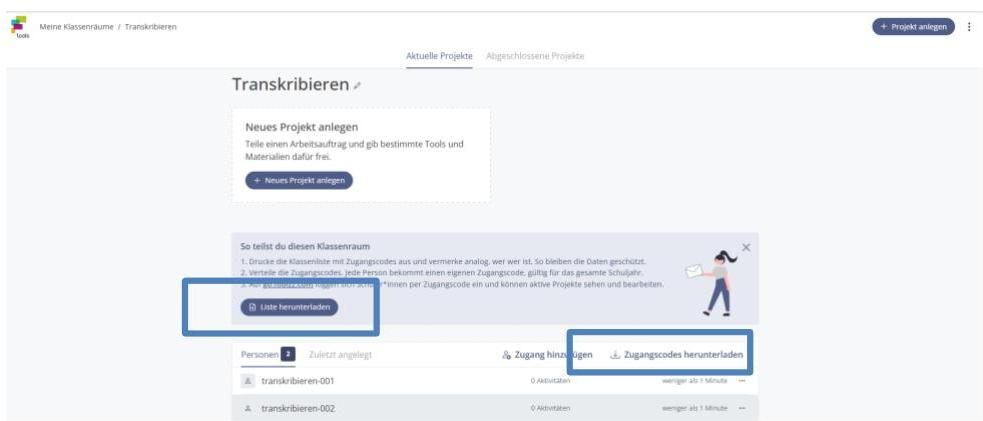
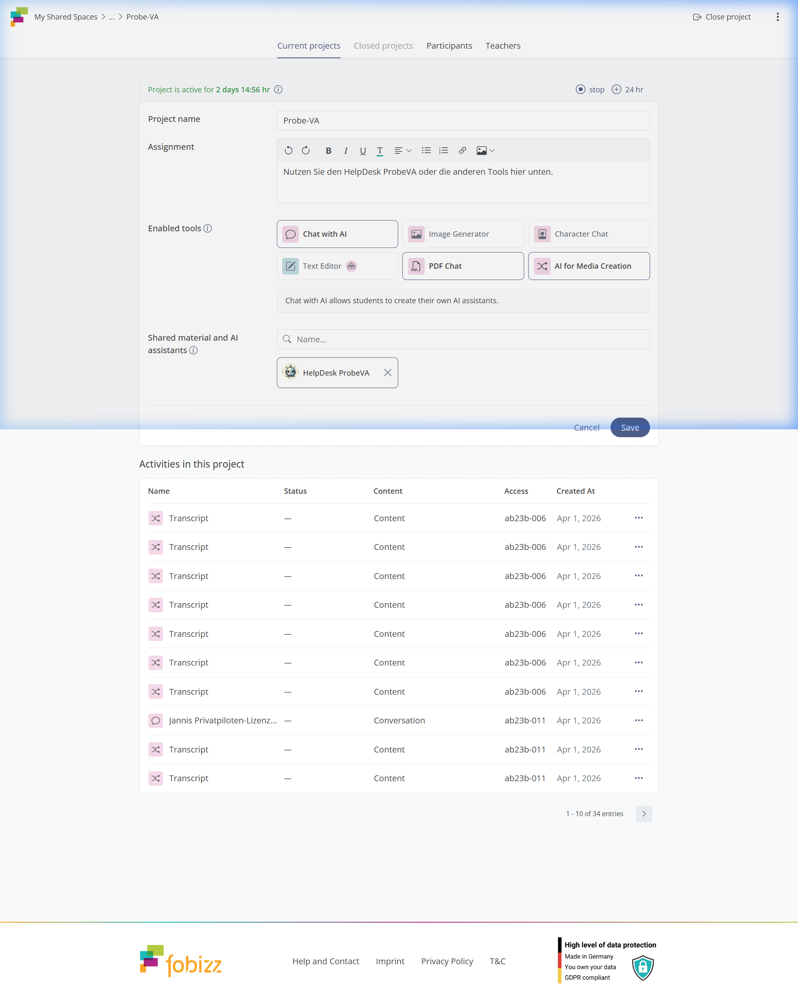
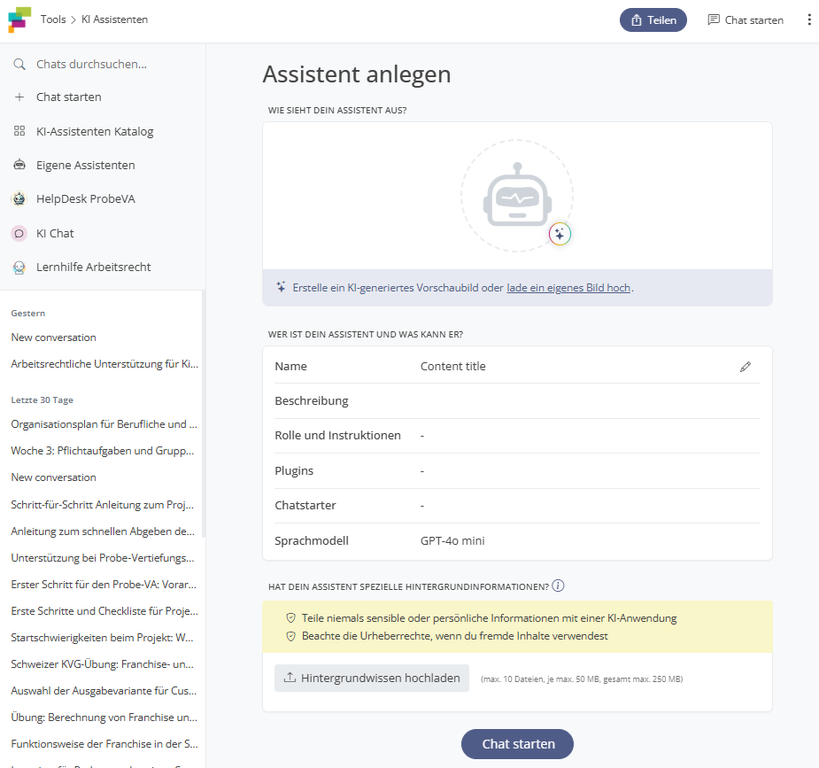
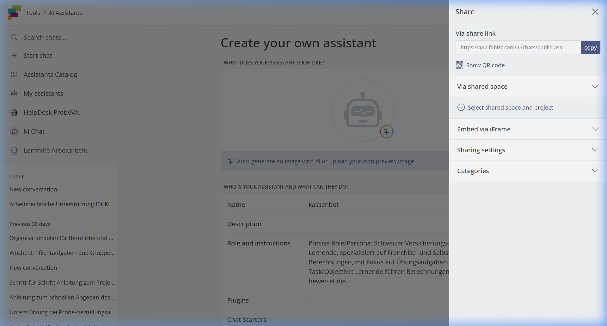

A
Ziel
Du nimmst einen Fachinhalt als Audio oder Video, erzeugst automatisch ein Transkript und generierst daraus
Verständnisfragen für den Unterricht.
1 · Transkript erstellen
1
In Fobizz gehe zu Tools und KI → KI Multimedia Tools → Transkript
erstellen.
2
Füge einen YouTube-Link oder eine Audiodatei ein — oder nutze den Link
von der Pinnwand im Klassenraum (Chrome-Extension für Audio-URLs).
3
Starte die Transkription. Warte bis das Ergebnis erscheint.
Tipp: Das Ergebnis wird automatisch unter Historie (oben rechts)
gespeichert.

Übersicht: Tools and AI > AI for Media Creation
2 · Mit KI Chat generieren
4
Gehe zu KI Chat. Füge das Transkript ein.
Prompt-Ideen für den Unterricht
• Diskussions-Perspektive: "Generiere Diskussionsfragen aus der
Perspektive eines Betroffene."
• Begriff-Übersicht: "Generiere eine Übersicht der wichtigsten
Begriffe mit einem Verwendungsbeispiel."
• Schüler-Rolle: "Übernimm die Rolle eines schwachen/starken Schüler. Welche Fragen sind
nach dem Beitrag zentral für dich?"
5
Passe die Fragen an dein Fach an.
✨
Modellauswahl beachten: Für optimale Ergebnisse in Fobizz solltest du darauf achten, ein
leistungsstarkes Modell zu wählen. Wir empfehlen GPT 5, Claude, Gemini, DeepSeek oder
Qwen.
B
Ziel
Du erzeugst einen KI-generierten Podcast zu einem Thema deines Fachs — mit Skript und eingesprochener Audiodatei —
als Lerngrundlage für deine Klasse.
1 · Podcast erstellen
1
In Fobizz: Tools und KI → KI Multimedia Tools → Podcast erstellen.
2
Konfiguriere deinen Podcast (Thema, Stimmen & Quellen):
Hinweis: Die Podcast-Länge wird automatisch reguliert (ca. 4–8 Minuten).
Vorgaben & Einstellungen
• Beispiele laden: Über den Textlink "Beispiel einfügen" lässt sich eine Vorlage laden,
falls man Hilfe beim Starten benötigt.
• Sprachauswahl: Im Dropdown-Menü "Ausgabesprache" kann die gewünschte Sprache für den
generierten Podcast festgelegt werden.
• Stimmenauswahl & Vorschau: Man kann zwei verschiedene Sprecherstimmen aus Dropdown-Menüs
auswählen (z.B. "Anna" und "Finn"). Über das kleine Play-Symbol lässt sich eine Hörprobe abspielen.
• Zusatzinfos & Zielgruppe: Im Freitextfeld lassen sich spezifische Anweisungen an die KI
geben (z.B. Tonalität, Fokus, Begriffe). Je genauer die Vorgaben für die BMS-Zielgruppe, desto stimmiger das
Resultat.
✨
Tipp: Nutze das Feld Zusatzinfos & Zielgruppe für bessere
Ergebnisse: Welche Tonalität (z.B. "erklärend", "sachlich", "humorvoll") soll gewählt werden? Welcher fachliche
Fokus ist wichtig? Welche Begriffe müssen vorkommen? Je präziser die Vorgaben, desto besser das
Ergebnis.
3
KI erstellt Skript und Audiofile. Lade beides herunter.

Podcast Creator: Oberfläche für Vorgaben und Quellen
2 · Weiterverarbeiten (Bonus)
Stelle den Podcast in einen Lernraum — Lernende
hören ihn mit ihrem Code-Zugang (siehe Aufgabe C).
Oder nutze das Skript für Aufgabe A: Verständnisfragen per KI-Chat generieren.
💡
Tipp: Sowohl Skript als auch Audiofile werden automatisch in deiner
Historie gespeichert und können jederzeit erneut aufgerufen und heruntergeladen
werden.
C
Ziel
Du richtest einen eigenen Lernraum ein, lädst die PDF herunter, erstellst ein Projekt und stellst ein
KI-Tool für deine Klasse bereit.
1 · Lernraum anlegen
1
Klicke oben rechts auf dein Profilsymbol → Meine Klassenräume →
+Anlegen.

Mein fobizz > My Shared Spaces
2
Wähle den Typ:
Langfristig (bis 12 Monate, Code-Zugang) | 24h (auch per Link teilbar)

Create: Duration selection (24h or 1 year)
3
Gib einen Namen und die Anzahl Teilnehmende an.
Speichern.
4
Lade die PDF herunter und speichere sie sicher.
Tipp: Im Adobe Reader Namen eintragen → ausdrucken → verteilen.

PDF herunterladen und verteilen
2 · Projekt & Tool hinzufügen
5
Im Lernraum: Projekt anlegen. Gib einen passenden Titel ein.
6
Füge ein Tool hinzu — z.B. KI Multimedia Tool. Gib dem Projekt einen
aussagekräftigen Titel.

Lernraum > KI-Multimedia-Tool hinzufügen
7
Speichern und Raumzeit definieren: Nach dem Speichern kann der Zugang
für max. 7 Tage verlängert werden. Mehrmals auf das Pluszeichen klicken.
3 · Aktivitäten einsehen & exportieren
8
Im Projekt: Drei-Punkte-Symbol → Aktivitäten der Lernenden einsehen.
9
Ergebnisse exportieren: Lade die Daten als Tabelle herunter. ⚠ Wichtig: Nicht bei allen
Aktivitäten ist eine Einsicht möglich (z.B. Transkriptionen werden nach Sitzungs-Ende gelöscht).
📸
Praxisbeispiel: Lernende können mit dem Smartphone Fotos machen und mit dem Tool "Text aus Bild oder
PDF erkennen" bearbeiten. Sie können das Ergebnis downloaden oder direkt mit der KI weiterarbeiten.
ℹ
Lernende sehen nach dem Login mit ihrem -Zugang nur die Projekte und Tools, die du für sie freigegeben hast.
Keine eigene Registrierung nötig — datenschutzkonform.
D
Ziel
Du erstellst einen eigenen KI-Assistenten für dein Fach, stellst ihn in deinen Lernraum und teilst ihn per Link.
Nutze dazu die Starthilfe:
to.fobizz.com/AgentMaker
1 · AgentMaker nutzen (Starthilfe)
1
Dieser Bot hilft dir, Rolle, Aufgabe und System-Prompt für deinen eigenen Assistenten zu
entwickeln.
2
Chatte mit dem AgentMaker — er stellt dir Fragen zu deinem Fach und generiert einen
fertigen Prompt-Text.
2 · Eigenen Bot erstellen
3
Tools und KI → KI Chat und Assistenten → KI-Assistenten Katalog → Eigene
KI-Assistenten → Neu erstellen.
4
Füge die mit dem AgentMaker generierte Prompt in das Textfeld ein.
5
Optional: Lade ein Fachdokument hoch (Gesetzestext, Zusammenfassung,
Aufgabenblatt) als Wissensbasis.
6
Speichern. Danach: Teilen-Button → In Klassenraum stellen oder
Freigabelink kopieren.

Wizard: Create your own assistant

Share options: Link or Class Share
🔗
Sharing & Remixing: Jede freigegebene KI (Bot) kann von anderen Lehrpersonen als Kopie
übernommen und angepasst werden (Remix).
Klassenraum: Bots können auch direkt von Lernenden in Projekten (siehe Aufgabe C) erstellt
werden.